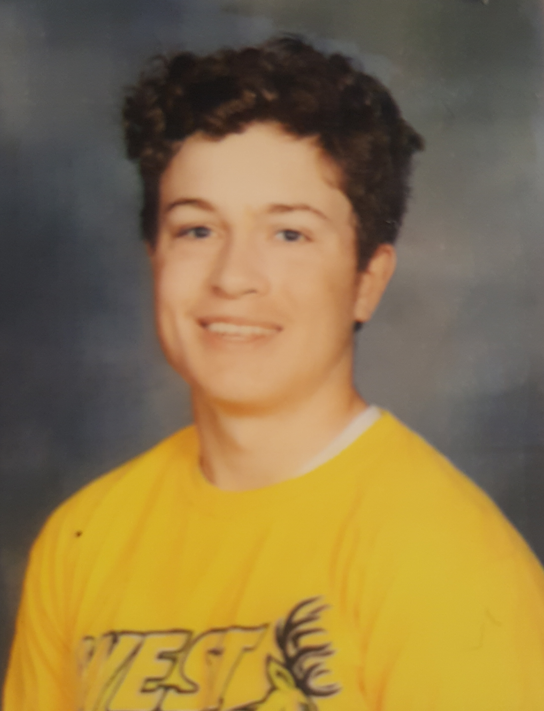

Marque Marketing
Welcome to Marque Marketing! Here is your start to developing the website you always dreamed of for your company, look around to find out what best suits your needs, thanks! “Ensure your remembered” - Marque Marketing.
Marque Marketing has been servicing business owners since mid-2020. We as Web Designers began only working in the tri state area of Pennsylvania, New Jersey, and New York. Fortunately, due to business growth, we have been able to expand our work to other states. So, if your new to Marque Marketing or a returning customer we are here for you no matter your location! The process of web design can seem taxing but here at Marque Marketing we include you, the customer, and owner of the website in on the process so you can directly see the growth of your own branding.